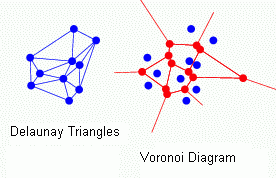
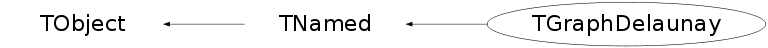

class TGraphDelaunay: public TNamed
TGraphDelaunay generates a Delaunay triangulation of a TGraph2D. This triangulation code derives from an implementation done by Luke Jones (Royal Holloway, University of London) in April 2002 in the PAW context. This software cannot be guaranteed to work under all circumstances. They were originally written to work with a few hundred points in an XY space with similar X and Y ranges. Definition of Delaunay triangulation (After B. Delaunay): For a set S of points in the Euclidean plane, the unique triangulation DT(S) of S such that no point in S is inside the circumcircle of any triangle in DT(S). DT(S) is the dual of the Voronoi diagram of S. If n is the number of points in S, the Voronoi diagram of S is the partitioning of the plane containing S points into n convex polygons such that each polygon contains exactly one point and every point in a given polygon is closer to its central point than to any other. A Voronoi diagram is sometimes also known as a Dirichlet tessellation./* 
This applet gives a nice practical view of Delaunay triangulation and Voronoi diagram. */
Function Members (Methods)
public:
| TGraphDelaunay() | |
| TGraphDelaunay(TGraph2D* g) | |
| virtual | ~TGraphDelaunay() |
| void | TObject::AbstractMethod(const char* method) const |
| virtual void | TObject::AppendPad(Option_t* option = "") |
| virtual void | TObject::Browse(TBrowser* b) |
| static TClass* | Class() |
| virtual const char* | TObject::ClassName() const |
| virtual void | TNamed::Clear(Option_t* option = "") |
| virtual TObject* | TNamed::Clone(const char* newname = "") const |
| virtual Int_t | TNamed::Compare(const TObject* obj) const |
| Double_t | ComputeZ(Double_t x, Double_t y) |
| virtual void | TNamed::Copy(TObject& named) const |
| virtual void | TObject::Delete(Option_t* option = "")MENU |
| virtual Int_t | TObject::DistancetoPrimitive(Int_t px, Int_t py) |
| virtual void | TObject::Draw(Option_t* option = "") |
| virtual void | TObject::DrawClass() constMENU |
| virtual TObject* | TObject::DrawClone(Option_t* option = "") constMENU |
| virtual void | TObject::Dump() constMENU |
| virtual void | TObject::Error(const char* method, const char* msgfmt) const |
| virtual void | TObject::Execute(const char* method, const char* params, Int_t* error = 0) |
| virtual void | TObject::Execute(TMethod* method, TObjArray* params, Int_t* error = 0) |
| virtual void | TObject::ExecuteEvent(Int_t event, Int_t px, Int_t py) |
| virtual void | TObject::Fatal(const char* method, const char* msgfmt) const |
| virtual void | TNamed::FillBuffer(char*& buffer) |
| void | FindAllTriangles() |
| virtual TObject* | TObject::FindObject(const char* name) const |
| virtual TObject* | TObject::FindObject(const TObject* obj) const |
| virtual Option_t* | TObject::GetDrawOption() const |
| static Long_t | TObject::GetDtorOnly() |
| TGraph2D* | GetGraph2D() const |
| virtual const char* | TObject::GetIconName() const |
| Double_t | GetMarginBinsContent() const |
| Int_t* | GetMTried() const |
| virtual const char* | TNamed::GetName() const |
| Int_t | GetNdt() const |
| Int_t* | GetNTried() const |
| virtual char* | TObject::GetObjectInfo(Int_t px, Int_t py) const |
| static Bool_t | TObject::GetObjectStat() |
| virtual Option_t* | TObject::GetOption() const |
| Int_t* | GetPTried() const |
| virtual const char* | TNamed::GetTitle() const |
| virtual UInt_t | TObject::GetUniqueID() const |
| Double_t* | GetXN() const |
| Double_t | GetXNmax() const |
| Double_t | GetXNmin() const |
| Double_t* | GetYN() const |
| Double_t | GetYNmax() const |
| Double_t | GetYNmin() const |
| virtual Bool_t | TObject::HandleTimer(TTimer* timer) |
| virtual ULong_t | TNamed::Hash() const |
| virtual void | TObject::Info(const char* method, const char* msgfmt) const |
| virtual Bool_t | TObject::InheritsFrom(const char* classname) const |
| virtual Bool_t | TObject::InheritsFrom(const TClass* cl) const |
| virtual void | TObject::Inspect() constMENU |
| Double_t | Interpolate(Double_t x, Double_t y) |
| void | TObject::InvertBit(UInt_t f) |
| virtual TClass* | IsA() const |
| virtual Bool_t | TObject::IsEqual(const TObject* obj) const |
| virtual Bool_t | TObject::IsFolder() const |
| Bool_t | TObject::IsOnHeap() const |
| virtual Bool_t | TNamed::IsSortable() const |
| Bool_t | TObject::IsZombie() const |
| virtual void | TNamed::ls(Option_t* option = "") const |
| void | TObject::MayNotUse(const char* method) const |
| virtual Bool_t | TObject::Notify() |
| void | TObject::Obsolete(const char* method, const char* asOfVers, const char* removedFromVers) const |
| static void | TObject::operator delete(void* ptr) |
| static void | TObject::operator delete(void* ptr, void* vp) |
| static void | TObject::operator delete[](void* ptr) |
| static void | TObject::operator delete[](void* ptr, void* vp) |
| void* | TObject::operator new(size_t sz) |
| void* | TObject::operator new(size_t sz, void* vp) |
| void* | TObject::operator new[](size_t sz) |
| void* | TObject::operator new[](size_t sz, void* vp) |
| virtual void | TObject::Paint(Option_t* option = "") |
| virtual void | TObject::Pop() |
| virtual void | TNamed::Print(Option_t* option = "") const |
| virtual Int_t | TObject::Read(const char* name) |
| virtual void | TObject::RecursiveRemove(TObject* obj) |
| void | TObject::ResetBit(UInt_t f) |
| virtual void | TObject::SaveAs(const char* filename = "", Option_t* option = "") constMENU |
| virtual void | TObject::SavePrimitive(ostream& out, Option_t* option = "") |
| void | TObject::SetBit(UInt_t f) |
| void | TObject::SetBit(UInt_t f, Bool_t set) |
| virtual void | TObject::SetDrawOption(Option_t* option = "")MENU |
| static void | TObject::SetDtorOnly(void* obj) |
| void | SetMarginBinsContent(Double_t z = 0.) |
| void | SetMaxIter(Int_t n = 100000) |
| virtual void | TNamed::SetName(const char* name)MENU |
| virtual void | TNamed::SetNameTitle(const char* name, const char* title) |
| static void | TObject::SetObjectStat(Bool_t stat) |
| virtual void | TNamed::SetTitle(const char* title = "")MENU |
| virtual void | TObject::SetUniqueID(UInt_t uid) |
| virtual void | ShowMembers(TMemberInspector& insp) |
| virtual Int_t | TNamed::Sizeof() const |
| virtual void | Streamer(TBuffer& b) |
| void | StreamerNVirtual(TBuffer& b) |
| virtual void | TObject::SysError(const char* method, const char* msgfmt) const |
| Bool_t | TObject::TestBit(UInt_t f) const |
| Int_t | TObject::TestBits(UInt_t f) const |
| virtual void | TObject::UseCurrentStyle() |
| virtual void | TObject::Warning(const char* method, const char* msgfmt) const |
| virtual Int_t | TObject::Write(const char* name = 0, Int_t option = 0, Int_t bufsize = 0) |
| virtual Int_t | TObject::Write(const char* name = 0, Int_t option = 0, Int_t bufsize = 0) const |
protected:
| void | CreateTrianglesDataStructure() |
| virtual void | TObject::DoError(int level, const char* location, const char* fmt, va_list va) const |
| Bool_t | Enclose(Int_t T1, Int_t T2, Int_t T3, Int_t Ex) const |
| void | FileIt(Int_t P, Int_t N, Int_t M) |
| void | FindHull() |
| Bool_t | InHull(Int_t E, Int_t X) const |
| Double_t | InterpolateOnPlane(Int_t TI1, Int_t TI2, Int_t TI3, Int_t E) const |
| void | TObject::MakeZombie() |
private:
| TGraphDelaunay(const TGraphDelaunay&) | |
| TGraphDelaunay& | operator=(const TGraphDelaunay&) |
Data Members
public:
| enum TObject::EStatusBits { | kCanDelete | |
| kMustCleanup | ||
| kObjInCanvas | ||
| kIsReferenced | ||
| kHasUUID | ||
| kCannotPick | ||
| kNoContextMenu | ||
| kInvalidObject | ||
| }; | ||
| enum TObject::[unnamed] { | kIsOnHeap | |
| kNotDeleted | ||
| kZombie | ||
| kBitMask | ||
| kSingleKey | ||
| kOverwrite | ||
| kWriteDelete | ||
| }; |
protected:
| Bool_t | fAllTri | !True if FindAllTriangles() has been performed on fGraph2D |
| Double_t* | fDist | !Array used to order mass points by distance |
| TGraph2D* | fGraph2D | !2D graph containing the user data |
| Int_t* | fHullPoints | !Hull points of size fNhull |
| Bool_t | fInit | !True if CreateTrianglesDataStructure() and FindHull() have been performed |
| Int_t* | fMTried | ! |
| Int_t | fMaxIter | !Maximum number of iterations to find Delaunay triangles |
| Int_t* | fNTried | !Delaunay triangles storage of size fNdt |
| TString | TNamed::fName | object identifier |
| Int_t | fNdt | !Number of Delaunay triangles found |
| Int_t | fNhull | !Number of points in the hull |
| Int_t | fNpoints | !Number of data points in fGraph2D |
| Int_t* | fOrder | !Array used to order mass points by distance |
| Int_t* | fPTried | ! |
| TString | TNamed::fTitle | object title |
| Int_t | fTriedSize | !Real size of the fxTried arrays |
| Double_t* | fX | !Pointer to fGraph2D->fX |
| Double_t* | fXN | !fGraph2D vectors normalized of size fNpoints |
| Double_t | fXNmax | !Maximum value of fXN |
| Double_t | fXNmin | !Minimum value of fXN |
| Double_t | fXScaleFactor | ! |
| Double_t | fXoffset | ! |
| Double_t* | fY | !Pointer to fGraph2D->fY |
| Double_t* | fYN | !fGraph2D vectors normalized of size fNpoints |
| Double_t | fYNmax | !Maximum value of fYN |
| Double_t | fYNmin | !Minimum value of fYN |
| Double_t | fYScaleFactor | ! |
| Double_t | fYoffset | !Parameters used to normalize user data |
| Double_t* | fZ | !Pointer to fGraph2D->fZ |
| Double_t | fZout | !Histogram bin height for points lying outside the convex hull |
Class Charts
{kind=link}
{kind=link}
{kind=link}
{kind=link}

Function documentation
Double_t ComputeZ(Double_t x, Double_t y)
Return the z value corresponding to the (x,y) point in fGraph2D
void CreateTrianglesDataStructure()
Function used internally only. It creates the data structures needed to compute the Delaunay triangles.
Bool_t Enclose(Int_t T1, Int_t T2, Int_t T3, Int_t Ex) const
Is point e inside the triangle t1-t2-t3 ?
void FileIt(Int_t P, Int_t N, Int_t M)
Files the triangle defined by the 3 vertices p, n and m into the fxTried arrays. If these arrays are to small they are automatically expanded.
void FindAllTriangles()
Attempt to find all the Delaunay triangles of the point set. It is not guaranteed that it will fully succeed, and no check is made that it has fully succeeded (such a check would be possible by referencing the points that make up the convex hull). The method is to check if each triangle shares all three of its sides with other triangles. If not, a point is generated just outside the triangle on the side(s) not shared, and a new triangle is found for that point. If this method is not working properly (many triangles are not being found) it's probably because the new points are too far beyond or too close to the non-shared sides. Fiddling with the size of the `alittlebit' parameter may help.
void FindHull()
Finds those points which make up the convex hull of the set. If the xy plane were a sheet of wood, and the points were nails hammered into it at the respective coordinates, then if an elastic band were stretched over all the nails it would form the shape of the convex hull. Those nails in contact with it are the points that make up the hull.
Bool_t InHull(Int_t E, Int_t X) const
Is point e inside the hull defined by all points apart from x ?
Double_t InterpolateOnPlane(Int_t TI1, Int_t TI2, Int_t TI3, Int_t E) const
Finds the z-value at point e given that it lies on the plane defined by t1,t2,t3
Double_t Interpolate(Double_t x, Double_t y)
Finds the Delaunay triangle that the point (xi,yi) sits in (if any) and calculate a z-value for it by linearly interpolating the z-values that make up that triangle.
void SetMaxIter(Int_t n = 100000)
Defines the number of triangles tested for a Delaunay triangle (number of iterations) before abandoning the search
void SetMarginBinsContent(Double_t z = 0.)
Sets the histogram bin height for points lying outside the convex hull ie: the bins in the margin.
TGraphDelaunay(const TGraphDelaunay& )
TGraphDelaunay& operator=(const TGraphDelaunay& )